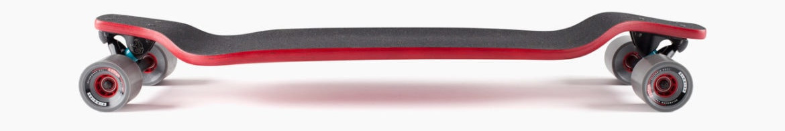
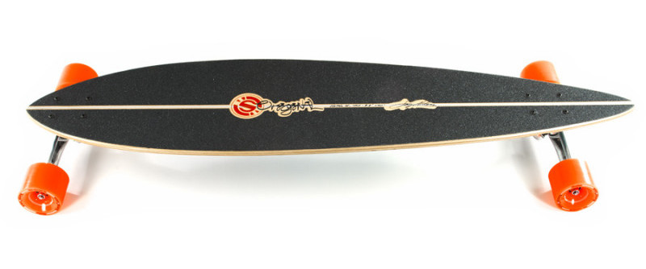
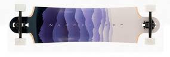
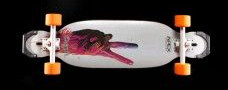
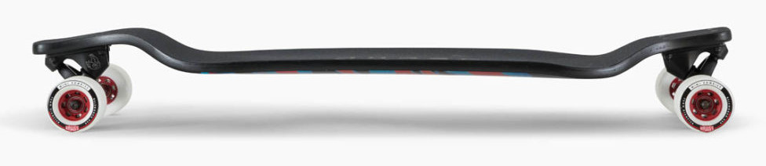

Longboard recommendations
This page will be about recommending specific boards to buy for Cruising, Freeriding, Freestyling and Downhill.
Cruising
For Cruising, I would recommend the Pintail 40 by Original Skateboards. The board is a good length for cruising, and has a good amount of flex for a smoother ride. The price is around €160.00, which is quite affordable considering the fact that original skateboard have a tendancy to make boards that last lifetimes.
Freeriding
For freeriding, I would recommend the Landyachtz Switchblade. This board is quite a stiff board, which lends itself to freeriding nicely. the shape is also quite well suited to Freeriding with a rather wide deck, allowing the user to put more power behind there power slides. This board is quite expensive, sitting at around €210.00, but because of the potential dangers of freeriding, and the amazing design of this board, the pros outweigh that one con.
Freestyling
For freestyle, the best choice is the Apex 34 from original skateboards. From its small size, the its tight turning trucks, it is simply the superior choice when freestyling. The board also has the unique feature of being set quite low to the ground, whilst still having a turned up tail, making the board ideal for any street related tricks. The board is around €230.00, which is quite a good price, considering the amount of features this board has.
Downhill
For Downhill, there is really only one board to consider when in the market, and that is the landyachtz Evo. This board is the pinnacle of downhill longboard research. The board is made to be aerodynamic, allowing for extrememly high speeds. The current world record for the fastest longboard is held by this board. The board itself is a drop down board, with the majority of the deck being set close to the ground, allowing for easy pushing and more stability at high speeds. Surprisingly, this board is one of the cheaper ones on the list, costing around €200.00. This is a very fair price for the board, due to it being the safest option for a very dangerous sport.
